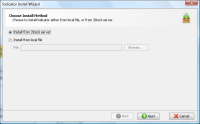
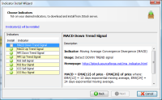
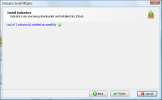
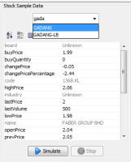
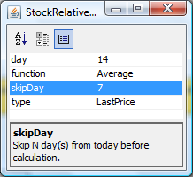

- Home
- ·
- Download
- ·
- Features
- ·
- Indicators
- ·
- Testimonial
- ·
 English
English 中文
中文Stock Indicator Editor
How can I get start with Stock Indicator Editor?
What kind of functionality you had provided for me to build my own indicator?
Can you show me an example on how to build an indicator?
What is the best way for me to share my indicator with friends?
How can I specific "N days back 14 days moving average"?
I would like to perform MACD scanning.
How can I get start with Stock Indicator Editor?
- The best way to get start with Stock Indicator Editor, is to start with our pre-built indicators. You may install pre-built indicators, by clicking on Install....

- Select Install from JStock Server, and click Next. 
- Select indicators you wish to install, and click Next. We highly recommend you select all indicators. 
- Click Finish. 
- You may test on the indicator, by entering a stock, and press Simulate. 
What kind of functionality you had provided for me to build my own indicator?
User may then access the indicator components from the following toolbar. 
Each of the component's functionality is described as below.
| Component | Icon | Description |
| Alert |  |
In every indicator which you built, it must consist at least (and only) single alert component. |
| Real time stock information |  |
This represents today real time stock information. You may choose Open Price, Last Price, High Price, Low Price, Typical Price ([High + Low + Last Price] / 3), Volume, Change Price, Change Price in Percentage, Last Volume, 1st/2nd/3rd Buy Price, 1st/2nd/3rd Buy Quantity, 1st/2nd/3rd Sell Price, 1st/2nd/3rd Sell Quantity. |
| Stock history information |  |
You may specific the stock history information in specific date. For example, you may specific average stock last price information from 14th June 2005 to 16th December 2006. You may either choose Maximum, Minimum, Average (Simple Moving Average), Mean Deviation, MACD, RSI (Relative Strength Index), EMA (Exponential Moving Average). You may also choose Open Price, Last Price, High Price, Low Price, Typical Price ([High + Low + Last Price] / 3), and Volume. |
| Stock relative history information |  |
You may specific the stock relative history information in specific date. For example, you may specific average stock last 14 days price information. You may either choose Maximum, Minimum, Average (Simple Moving Average), Mean Deviation, MACD, RSI (Relative Strength Index), EMA (Exponential Moving Average). You may also choose Open Price, Last Price, High Price, Low Price, Typical Price ([High + Low + Last Price] / 3), and Volume. |
| Constant |  |
You may specific any constant number like 1, 10, 200, -5. |
| Arithmetic |  |
You may perform one of the arithmetic operation, add/ minus/ multiplication/ division. |
| Function |  |
You may perform one of the function operation, absolute/ square. |
| Comparison |  |
You may perform the following equality/ comparison operation, equal/ greater than/ lesser than/ equal or greater than/ equal or lesser than. |
| Logical |  |
You may perform the following logical operation. There are two : OR/ AND. For example, you want something
"When today price is lesser than yesterday price OR today volume is lesser than yesterday volume" "When today price is lesser than yesterday price AND today volume is lesser than yesterday volume" |
Can you show me an example on how to build an indicator?
Here is an example, to show you how to build a simple indicator, to find out stock "its closing price is in 14 days highest". First, we will draft out our equation to Real Time Stock's Last Price >= Maximum from 14 days Stock's Last Price From the equation, we know that we need the following components :
- Real time stock information
- Relative stock history
- Equality
- Alert


{kind=link}
{kind=link}
What is the best way for me to share my indicator with friends?
- Right click on the indicator name and select Export....

- A zip file will be saved. Email the zip file to your friend.
- You friend might install it, by clicking on Install..., and select Install from local file.
How can I specific "N days back 14 days moving average"?
There is a skipDay field in Stock relative history information, where you may specific N days back. For instance, you would like to know 1 week ago 14 days moving average. You may assign 7 in skipDay, to indicate 1 week ago. 
I would like to perform MACD scanning.
We implement MACD feature in both Stock relative history information and Stock history information. We are using 26-days slow period, and 12-days fast period.
- MACD : (12-day EMA - 26-day EMA)
- MACDSignal : N-day EMA of MACD Line
- MACDHist : MACD Line - Signal Line